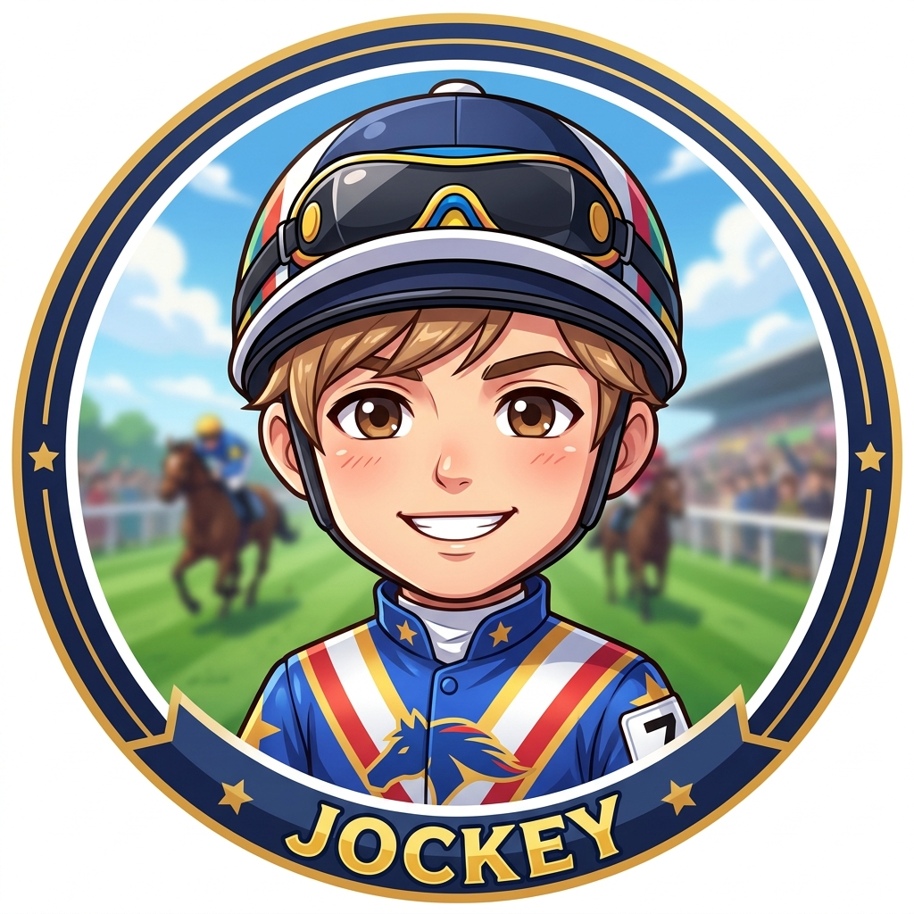

FORCE
OF THE HORSE
TUTORIAL
STEP
0
/
16
▼
🏁
⚙
設定
SETTINGS / 設定
✕
🎮 ゲーム設定
🎥 視点・カメラ
プレイモード
Tutorial
Manual
チュートリアル進行、または自由対戦（マニュアル操作）を選択できます。
背景・UIテーマ
Cyber (電脳)
Dark (標準)
White (白)
Nature (自然・芝)
3D電脳空間「Cyber」、白ベース「White」、全画面芝生の「Nature」など背景テーマを選択できます。
サウンド
🔊 BGM
ゲーム内BGMの再生・停止を切り替えます。
視点プリセット
0°(真上・平面)
10°(標準)
25°(奥行き重視)
3D TILT (傾き微調整)
10°
FIELD DEPTH (奥行きパース)
1300px
CAMERA ZOOM (倍率)
114%
タッチ/マウス 3Dチルト [縦軸のみ]
視点をリセット
タップ / クリックで閉じる

あいて
CPU プレイヤー
手札:
0
枚
0
0
コマンド
走破
コマンド
状況
コマンド
アイテム
フェイズ切替
ターンエンド
COMMAND
手札
◀
▶
タップして続ける
TURN
相手のターン
CHANGE
自分のターン：カードは自動で引かれます。状況カードを使うか選び、走破または終了を選択します。
相手が走破！
相手の走破を手札の馬カードでガードしますか？
🛡️ ガードする
⏭ ガードしない
相手プレイヤー
ガードをするか考えています...
走破サポート
走破値を変えるアイテムカードを使いますか？
使う
使わない
☀️ 状況カード
使用可能な状況カードが手札にあります。状況カードを使いますか？
はい
いいえ
🏆
VICTORY
⟲ もう一度あそぶ